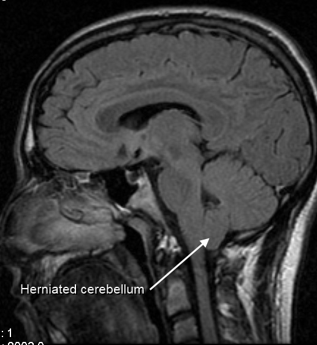

Ficha del catálogo
Malformación de Chiari de tipo I
- Sistema
- Nervioso
- Modalidad
- RM
- Región
- Unión craneocervical y fosa posterior
- Dificultad
- Intermedio
La malformación de Chiari de tipo I consiste en el descenso de las amígdalas cerebelosas por debajo del plano del agujero magno, con obstrucción parcial de la circulación del líquido cefalorraquídeo en la unión craneocervical. Puede ser asintomática o cursar con cefalea occipital que aumenta con la tos y el esfuerzo, y con síntomas por siringomielia asociada.
Técnica
Resonancia magnética con corte sagital medio potenciado en T1 y T2 de la unión craneocervical, ampliada a todo el raquis cuando se sospecha cavidad medular. El estudio del flujo del líquido cefalorraquídeo aporta información funcional sobre el grado de obstrucción.
Qué observar
- Posición de las amígdalas cerebelosas respecto al plano del agujero magno
- Morfología puntiaguda de las amígdalas, orientadas hacia abajo
- Borramiento de las cisternas de la unión craneocervical
- Existencia de cavidad siringomiélica en la médula cervical o dorsal
- Tamaño reducido de la fosa posterior y verticalización del tentorio
- Anomalías óseas asociadas de la charnela y del clivus
Hallazgos
En el corte sagital medio las amígdalas cerebelosas descienden por debajo del plano del agujero magno y adoptan forma alargada y puntiaguda, con desaparición del líquido cefalorraquídeo alrededor del bulbo. La fosa posterior suele ser de pequeño tamaño. En una proporción importante de pacientes existe siringomielia, que se manifiesta como cavidad longitudinal de señal similar a la del líquido cefalorraquídeo dentro de la médula. Los estudios de flujo muestran reducción o inversión del desplazamiento normal del líquido en la unión.
Perlas
La medida del descenso amigdalar debe realizarse en el corte sagital medio respecto a la línea que une el basion y el opistion, y su valor aislado no basta para indicar cirugía, ya que la decisión depende de los síntomas, de la morfología amigdalar y de la existencia de siringomielia. Encontrar una cavidad medular obliga a estudiar la unión craneocervical, porque la causa suele estar allí.
Diagnóstico diferencial
- Ectopia amigdalar sin repercusión
- Descenso leve con amígdalas de forma redondeada, cisternas conservadas, sin siringomielia ni síntomas.
- Herniación amigdalar adquirida por masa supratentorial
- Existe lesión ocupante con hipertensión intracraneal y el descenso es agudo con borramiento global de las cisternas.
- Hipotensión intracraneal
- Descenso del encéfalo con realce paquimeníngeo difuso, ingurgitación venosa e hipófisis prominente.
- Malformación de Chiari de tipo II
- Se acompaña de disrafismo espinal abierto, fosa posterior muy pequeña y descenso del tronco y del cuarto ventrículo.
Simuladores
- Corte sagital fuera de la línea media que exagera la posición amigdalar
- Posicionamiento con flexión cervical marcada
- Artefacto de volumen parcial en la unión craneocervical
Por modalidad
- TC
- Valora la morfología ósea de la charnela y las anomalías asociadas, pero no define bien el descenso amigdalar.
- RM
- Es la técnica de elección porque mide el descenso, detecta la siringomielia y estudia la dinámica del líquido cefalorraquídeo.
Protocolo
Sagital T1 y T2 de línea media centrado en la unión craneocervical, axiales de la fosa posterior, estudio de todo el raquis ante sospecha de cavidad medular y secuencia de flujo del líquido cefalorraquídeo cuando se plantea cirugía.
Clasificación
Se distingue del tipo II, que se asocia a disrafismo espinal abierto y a descenso del tronco y del cuarto ventrículo, y de otras variantes de la unión craneocervical. En el tipo I la descripción debe incluir la magnitud del descenso, la morfología de las amígdalas, el estado de las cisternas y la presencia de siringomielia.
Errores frecuentes
- Medir el descenso en un corte no centrado en la línea media
- Indicar tratamiento por la sola medida del descenso sin correlación clínica
- No estudiar el raquis y pasar por alto una siringomielia asociada

malformación de Chiari unión craneocervical amígdalas cerebelosas siringomielia agujero magno cefalea tusígena